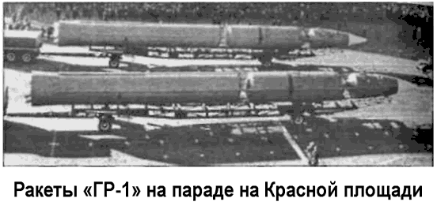

Проект «Глобальная ракета»
17 октября 1963 года Генеральная Ассамблея ООН приняла резолюцию 1884, призывающую все нации воздержаться от выведения на орбиты вокруг Земли или размещения в космосе ядерных вооружений или любых других видов оружия массового уничтожения.
Интересно, что еще за год до этого заместитель министра обороны США Росуэл Джилпатрик официально сообщил, что Соединенные Штаты «не имеют программы размещения какого-либо оружия массового уничтожения на орбите».
Советский Союз поддержал резолюцию 1884, но это отнюдь не означало, что советское руководство разделяло мнение американских военных о малой эффективности орбитальных бомб. Скорее, оно решило идти «другим путем», обходящим резолюцию ООН.
Первое указание на это поступило еще 15 марта 1962 года, когда Никита Хрущев заявил на весь мир: «…мы можем запускать ракеты не только через Северный полюс, но и в противоположном направлении тоже. [..] Глобальные ракеты могут лететь со стороны океана или с других направлений, где оповещающее оборудование не может быть установлено».
Проектно-исследовательские работы по трехступенчатой глобальной ракете в ОКБ-1 под руководством Сергея Королева велись с 1961 года. Однако постановление правительства о начале разработки такой ракеты вышло 24 сентября 1962 года. Борис Черток вспоминает:
«…Королев предложил обсудить график проектирования новой «сверхдальней» ракеты, которую он назвал глобальной.
Идея заключалась в том, что ракета Р-9 дополнялась третьей ступенью. При этом дальность полета не ограничивалась.
Третья ступень была способна даже выйти на орбиту искусственного спутника. Система управления последней ступенью и ее ядерным «полезным грузом» предполагала использование астронавигации. Предложение было, как сказал Королев, восторженно встречено Хрущевым…»
Ракета должна была обеспечить вывод головной части с ядерным боезарядом на орбиту высотой около 150 километров.
После ориентации в пространстве и коррекции происходило торможение. Боеголовка сходила с орбиты и устремлялась к цели. При такой схеме полета «глобальная ракета» имела практически неограниченную дальность действия.
В первоначальном варианте «ГР-1» («Глобальная ракета первая») представляла модификацию ракеты «Р-9А», оснащенную третьей ступенью с ЖРД, создаваемым в ОКБ-1 под руководством Михаила Мельникова. Позже были начаты работы над проектом ракеты с маршевыми двигателями первой и второй ступеней главного конструктора ОКБ-276 Николая Кузнецова.
«ГР-1» («8К713») — трехступенчатая баллистическая ракета.
Ее габариты: длина — 39 метров, максимальный диаметр корпуса — 2,75 метра, стартовая масса — 117 тонн, масса боеголовки — 1500 килограммов. Ракета имела традиционные для королевского КБ кислородно-керосиновые двигатели. Первая ступень оснащалась четырьмя качающимися ЖРД «НК-9» конструкции Кузнецова общей тягой 152 тонн. Вторая ступень имела один маршевый ЖРД «НК-9В» тягой 46 тонн. Третья ступень — ЖРД «С1-5400» конструкции Михаила Мельникова тягой 8,5 тонны.
Пуск ракеты предполагалось осуществлять из шахтной пусковой установки, для чего на площадке № 51 полигона Тюра-Там (Байконур) был создан специальный стартовый комплекс с полной автоматизацией предстартовых операций.
На позицию ракета должна была поставляться в транспортнопусковом контейнере. Изготовление «ГР-1» велось на Куйбышевском заводе «Прогресс». 9 мая 1965 года на военном параде в Москве были продемонстрированы новые МБР, получившие на Западе обозначение «SS-10 Scrag». Их появление на Красной площади сопровождалось следующим радиокомментарием:
«Проходят трехступенчатые межконтинентальные ракеты.
Их конструкция улучшена. Они очень надежны в эксплуатации.
Их обслуживание полностью автоматизировано. Парад внушительной боевой мощи венчается гигантскими орбитальными ракетами. Они родственны ракетам-носителям, которые надежно выводят в космос наши замечательные космические корабли, такие как «Восход-2». Для этих ракет не существует предела досягаемости. Главным достоинством ракет такого класса является их способность поражать вражеские объекты буквально с любого направления, что делает их по существу неуязвимыми для средств противоракетной обороны».

Это и были ракеты «ГР-1». Вскоре их вновь показали миру — на ноябрьском параде того же года: «…Перед трибунами проходят гигантские ракеты. Это орбитальные ракеты.
Боевые заряды орбитальных ракет способны наносить внезапные удары по агрессору на первом или любом другом витке вокруг Земли».
После таких демонстраций «орбитальных ракет» Госдепартамент США публично потребовал от СССР прояснить свое отношение к резолюции ООН о недопущении вывода в космос оружия массового поражения. На это было заявлено, что резолюция запрещает применение космического оружия, но не его производство.
Эти демонстрации были очередным блефом. Сформированная в 1964 году в в/ч 25 741 группа для испытаний ракеты «ГР-1» выбивалась из сил, но не могла довести ее до летных испытаний — при вывозе на стартовый комплекс отказов было так много, что их не успевали устранять.
А в начале 1965 года правительственная комиссия подвела итоги соревнования ракетных конструкторских бюро по созданию «глобальных ракет». Дело в том, что помимо ОКБ-1 Сергея Королева на разработку этого проекта претендовали еще два конструкторских бюро — ОКБ-52 Владимира Челомея (ракета «УР-200А») и ОКБ-586 Михаила Янгеля (ракета «Р-36орб»).
Владимир Челомей предлагал универсальную ракету, предназначенную для доставки на орбиту Земли средств противокосмической обороны, морской разведки, а также для стрельбы по неприятелю ядерными боезарядами. Согласно проекту его «УР-200А» («8К83») могла служить и как «глобальная ракета», доставляя в расчетную точку орбитальную боеголовку весом в 2 тонны. В целом испытания базовых ракет «УР-200» («8К81») шли успешно — с ноября 1963 года по 1965 год было произведено девять удачных запусков — и была надежда, что модификации «УР-200А» и «УР-200К» также покажут себя с лучшей стороны.
Однако, проведя сравнение характеристик разрабатывавшихся ракет-носителей, ход создания и испытаний ракет, комиссией было сделано заключение, что мощности «ГР-1» и «УР-200А» явно недостаточны для решения задач по выведению глобальных головных частей. Приоритет был отдан разработке Янгеля, а в качестве глобальной было решено использовать ракету-носитель «Р-36орб» («8К69»).